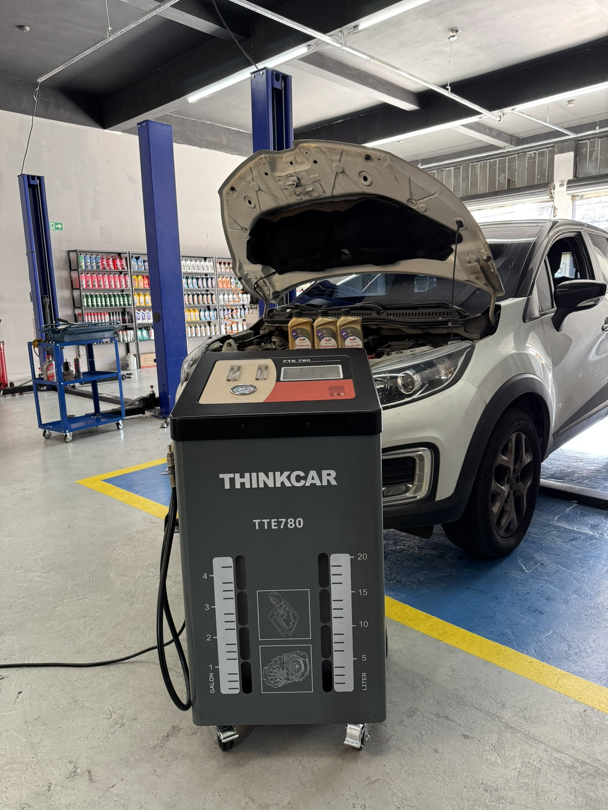

Análise técnica criteriosa para identificar corretamente as necessidades do veÃculo.
Troca de óleo e serviços automotivos
Loja Especializada em Lubrificantes Automotivos
Faça a manutenção preventiva do motor e do câmbio do seu veÃculo com o lubrificante certo e evite gastos desnecessários.
Atendemos veÃculos nacionais e importados
Sobre nós
Manutenção com precisão e transparência.
A Trocca Lubrificantes é uma empresa especializada em manutenção automotiva, localizada na Mooca, em São Paulo, que atua com foco em precisão técnica, transparência e confiança no atendimento.
Nosso trabalho é baseado em um princÃpio simples: fazer o correto para cada veÃculo, respeitando as especificações do fabricante e priorizando a durabilidade e o bom funcionamento dos sistemas.
Sabemos que a manutenção automotiva muitas vezes gera dúvidas. Por isso, adotamos uma abordagem clara e direta: explicamos cada necessidade identificada, orientamos o cliente e executamos apenas o que realmente é necessário.
Trabalhamos com processos organizados e critérios técnicos para garantir que cada serviço seja realizado com atenção aos detalhes, utilizando os fluidos e componentes adequados para cada aplicação.
Por que escolher a Trocca Lubrificantes?
Cada etapa é explicada de forma clara, permitindo uma decisão consciente.
Utilização de óleos e fluidos conforme as especificações de cada fabricante.
Processos estruturados para otimizar o tempo sem comprometer a qualidade.
Foco em manutenção preventiva para evitar falhas e custos elevados no futuro.

Nossos serviços
Cuidados essenciais para motor e transmissão.
Troca de óleo de câmbio automático
Fluido correto para transmissão automática, CVT ou automatizada, com aplicação técnica.
Saiba maisTroca de óleo do motor
Óleo com viscosidade e norma adequadas para proteger e lubrificar o motor.
Saiba maisTroca de freio e pastilhas
Verificação e troca de pastilhas para manter eficiência e segurança na frenagem.
Saiba maisTroca de fluido de radiador
Fluido de arrefecimento adequado para controle térmico e proteção do sistema.
Saiba maisTroca suspensão e amortecedores
Correção de desgaste em suspensão e amortecedores para conforto e estabilidade.
Saiba maisRevisão preventiva
Checklist técnico para identificar desgastes, vazamentos e riscos antes da falha.
Saiba maisRemoção de delay no acelerador
Ajuste para reduzir a demora de resposta do pedal eletrônico do acelerador.
Saiba maisDiagnóstico automotivo
Leitura de falhas e análise técnica para encontrar a causa real do problema.
Saiba maisAvaliações do Google
Clientes destacam atendimento, agilidade e confiança.
★★★★★
Cliente verificado
Atendimento rápido e explicação clara sobre o lubrificante correto para cada veÃculo.
★★★★★
Cliente verificado
Serviço transparente, orçamento objetivo e cuidado na manutenção preventiva.
★★★★★
Cliente verificado
Boa variedade de óleos, filtros e itens automotivos para resolver tudo em uma visita.
Perguntas frequentes
Dúvidas antes de trocar?
Respostas curtas ajudam o cliente a decidir rápido e reduzem objeções antes do contato.
Quando devo trocar o óleo do câmbio automático?
O intervalo varia por modelo e tipo de transmissão. A Trocca confere a aplicação correta e orienta o prazo ideal conforme uso e manual do veÃculo.
Vocês trabalham com óleo de motor para qualquer carro?
Sim. A equipe verifica viscosidade, norma e especificação antes da aplicação.
Preciso agendar?
O agendamento pelo WhatsApp ajuda a garantir atendimento mais rápido, principalmente para troca de fluido de câmbio.
Vocês vendem filtros e lubrificantes separados?
Sim. A loja pode atender compra avulsa ou serviço completo com instalação.
Contato
Fale com a Trocca
Endereço
Rua da Mooca, 874 - Mooca
São Paulo - SP, 03104-010
Telefone / WhatsApp
(11) 91910-6660
Horário
Segunda a sexta: 08h às 18h
Sábado: 08h às 14h